Timeline of Irish–Indigenous Interactions
Each entry traces key moments of Irish–Indigenous connection, including the 1847 Choctaw donation and extending into modern acts of solidarity.
Early Irish Settlement on Indigenous Lands
Irish settlers arrived in North America and lived alongside Indigenous communities through trade, labor, and intermarriage.
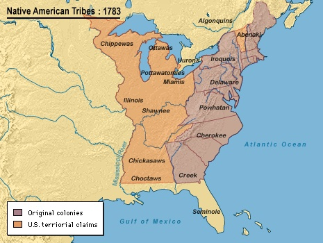
Acts of Union
The Acts of Union dissolved the Irish Parliament and created the United Kingdom of Great Britain and Ireland. It established a single Westminster-based parliamen that contained 100 Irish members. It had an additional purpose of controlling Ireland after the failed 1798 Rebellion.
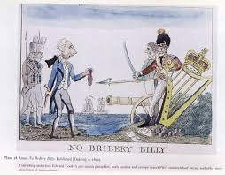
Treaty of Dancing Rabbit Creek
The Choctaw Nation ceded land in Mississippi and was forcibly relocated westward. It was the first removal treaty under the Indian Removeal Act. It ceded about 11 million acres of Choctaw land.
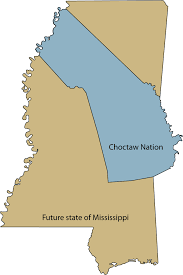
Trail of Tears
The forced relocation of Indigenous nations, including the Choctaw, Cherokee, and others. It killed around 60,000 Indigenous people.
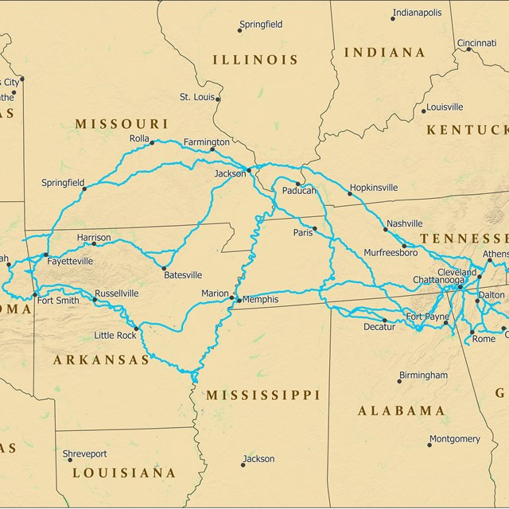
Great Irish Famine
The potato blight and colonial economic systems caused mass starvation and migration. The most impacted was the western and southern parts of Ireland where Irish language dominated.
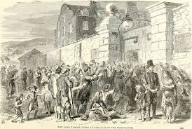
Choctaw Donation
The Choctaw Nation raised funds to support Irish famine relief despite their own recent displacement from the Trail of Tears. It was $170 or around $5,000 today.
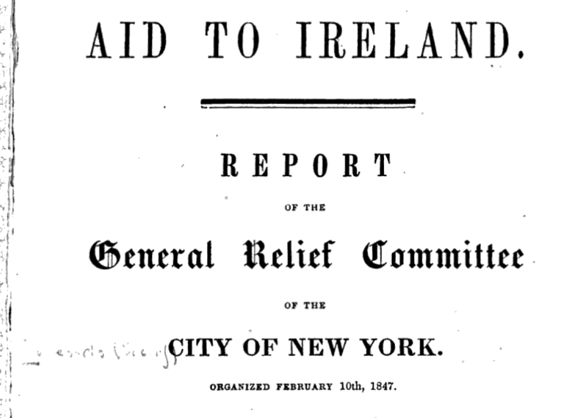
Missionary Contact
Irish Catholic missionaries engaged with Indigenous communities across North America, trying to convert them.
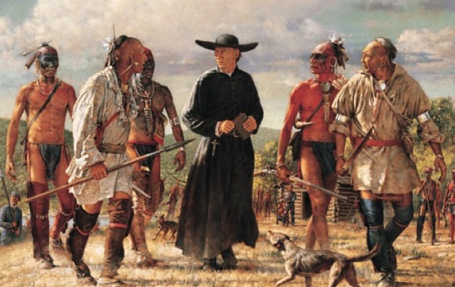
American Civil War
Irish immigrants served in large numbers on both sides of the war while Indigenous nations faced division and displacement as their lands were taken.
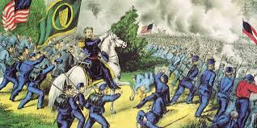
Cross-Cultural Correspondence
Both communities exchanged letters, stories, and cultural practices across networks of migration and survival.
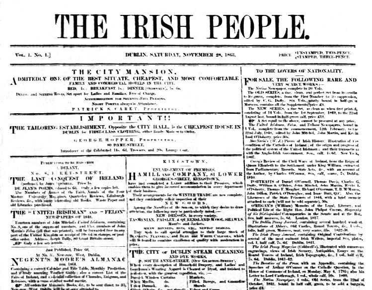
James Mooney Ethnography
Mooney documented Cherokee and other Indigenous cultures, preserving oral histories and traditions. He lived with them for several years and was particuarly interested in peyote religon. He was a proud Irish immigrant and served as president of the Gaelic Society. He is now recognized was one of the most important ethnologists for understanding Indigenous people on their own terms.
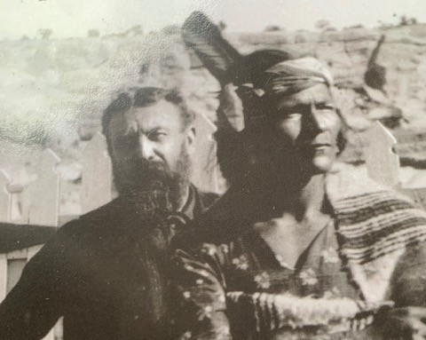
Éamon de Valera Honorary Chief
De Valera was adopted as honorary chief of the Ojibwe during fundraising efforts in the U.S. for Irish Independence.
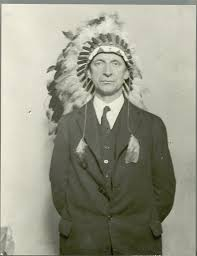
Famine Walk
Choctaw leaders joined Irish commemorations of the Great Famine in County Mayo.
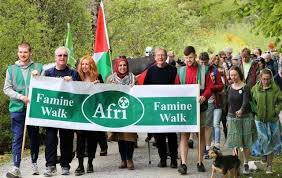
Choctaw Nation Visit
Irish delegations visited the Choctaw Nation to honor shared history of displacement and colonization.
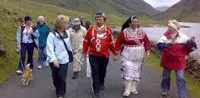
Dublin Memorial Plaque
A plaque was unveiled in Dublin honoring the Choctaw donation.
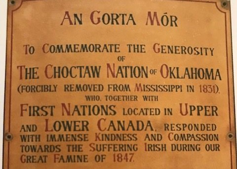
Mary Robinson Visit
The Irish President, Mary Robinson, visited the Choctaw Nation to continue solidarity, and was honored as a chief.
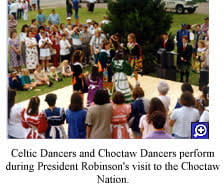
Kindred Spirits
A sculpture in Ireland was created to honor past Choctaw generosity.
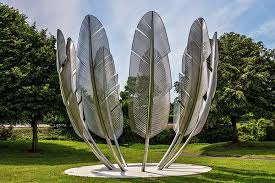
Scholarship Initiative
An education exchange program was established between Ireland and the Choctaw Nation for any Choctaw member to study in Ireland.
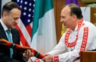
Pandemic Solidarity Fund
Irish donors largely supported Navajo and Hopi COVID-19 relief efforts.
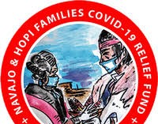
Eternal Heart Monument
The Choctaw Nation unveiled a monument celebrating Irish solidarity and the Kindred Spirits Monument.
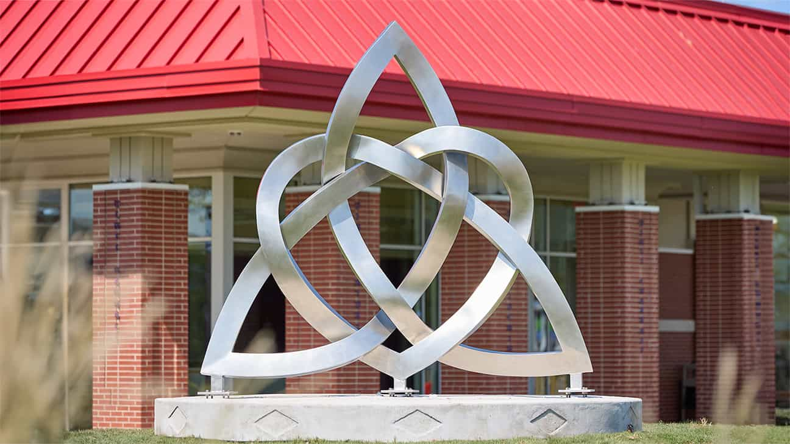
Navajo and Hopi Gift
A woven rug was gifted to Ireland as a symbol of continued solidarity, especially from COVID-19 relief funds.
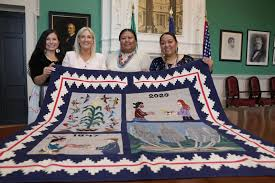